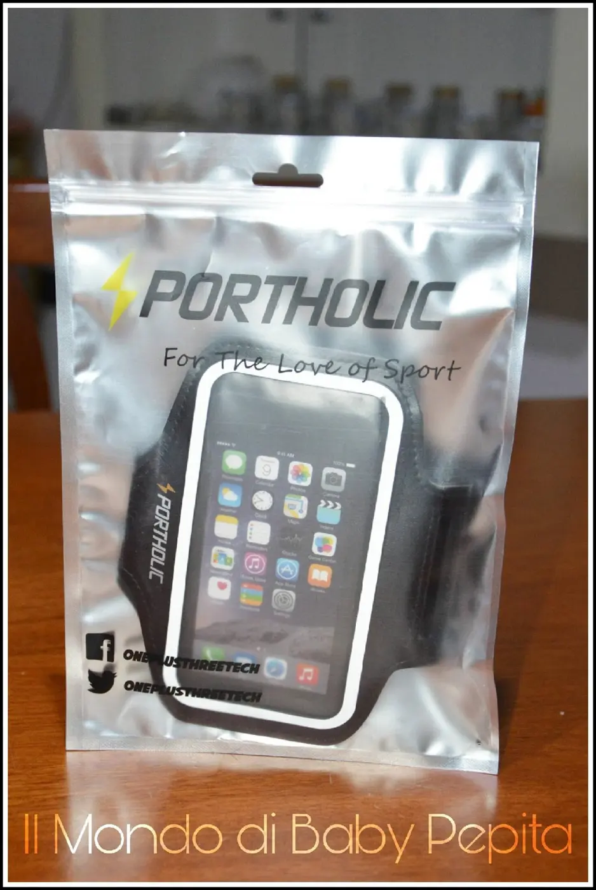
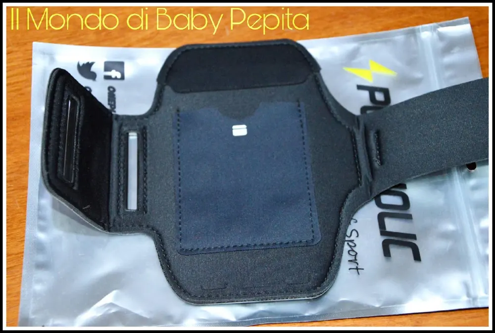
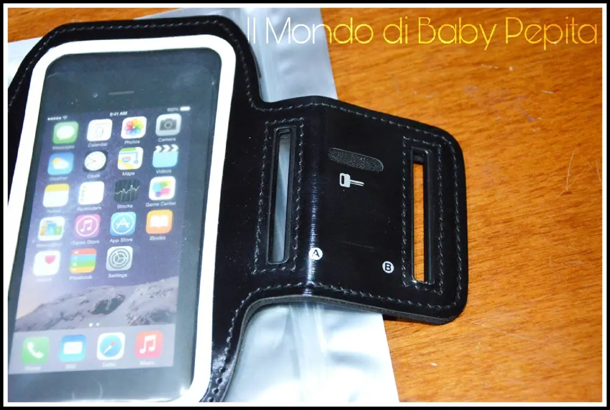
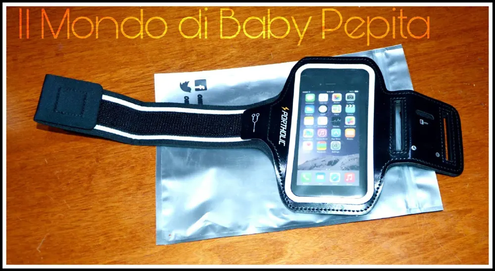

Fascia Da Braccio Sportiva


Salve oggi voglio parlarvi di un prodotto pratico ed utile per gli sportivi . Sicuramente avrete visto molte fasce per lo sport e per il running, ma spesso e volentieri si tratta di prodotti dal materiale scadente o realizzati in maniera tale da risultare davvero scomodi durante le nostre ore di attività.
Questa fascia sportiva per smartphone arriva nel sacchetto di plastica con la chiusura ermetica da poter riutilizzare per quando non viene utilizzata.
La fascia e di colore nero con delle strisce auto riflettente la misura e per smartphone 5.1 pollici ma si può mettere anche da 5.2 .
Ha solo una nota negativa:
La nota negativa è che non è elastica.

Le note positive sono:
1. bella da vedere, poiché è molto pratica ed estremamente nera.
2. contiene il telefono ed anche il cronometro ben fermo e non c'è la sensazione che puoi perdere le tue cose mentre corri.
3. il nastro a strappo è abbastanza resistente ed aderisce bene.
4. il materiale è forte e morbido al contatto con la pelle.
5. ha varie tasche che permettono di poter portare con noi i documenti.
6. c'è una zona anche adatta ai fili per le cuffie.
7. in più c'è anche una zona per le chiavi.


Utilissima questa fascia e dal prezzo più che accessibile.
La consiglio per chiunque faccia sport e vuole tenere con sè tutto l'occorrente senza rinunciare a correre o alla palestra .
Prezzo: 7,01 €
Per acquistare questa fascia potete farlo QUI
Per quanto riguarda me seguitemi sui miei social: